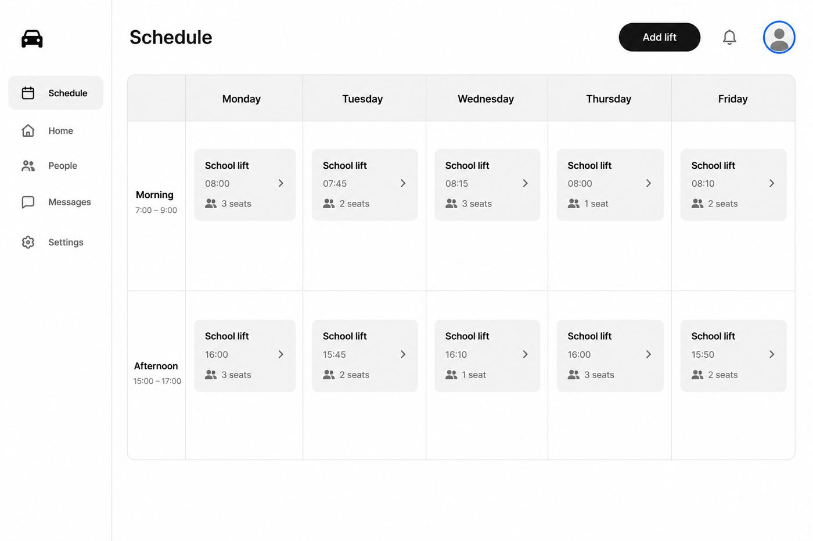
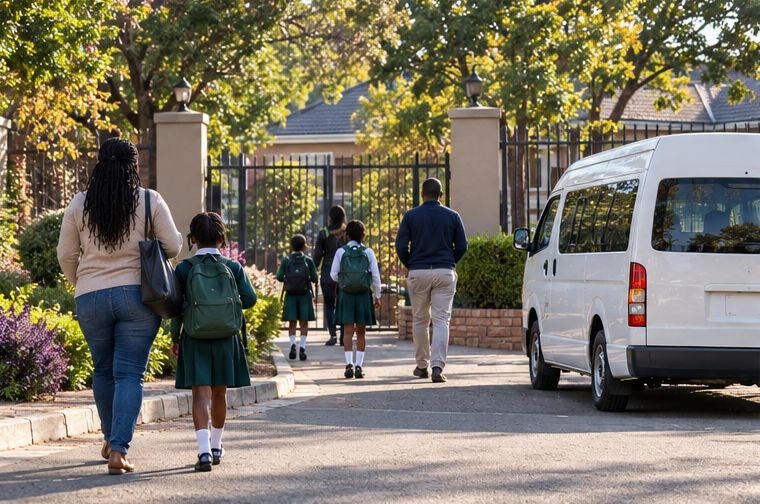

- Work
- Lift Club
Lift Club: from forty WhatsApp messages to one week view
How four parents in Umhlanga stopped losing track of who drives on Thursday.
- Role
- Product designer
- Team
- 2 engineers, 1 PM
- Time
- 10 weeks, 2026
- Result
- 3× more swaps

The problem
Parents already shared lifts. They just did it in a group chat, where a swap on Tuesday night was buried by Wednesday morning. Twice a month, a child waited at the gate.
We sat at three school gates for a week. Every parent we spoke to had screenshotted a message to remember it.

What shipped
One screen: the week, mornings on top, afternoons below. Each lift shows who's driving and how many seats are left. A swap is one tap and a yes from the other parent.
Each family has its own ring colour, so you can spot your days without reading a word.
| Per club, per month | Before | After |
|---|---|---|
| Messages about lifts | 186 | 22 |
| Swaps that happened | 4 | 13 |
| Children left waiting | 2 | 0 |
“I haven't opened the group chat in a month. That's the review.”Thandi, parent and club starter
Next project

Spaza Stock: counting out loud
Voice counting for shop owners who never wanted to scan a barcode.